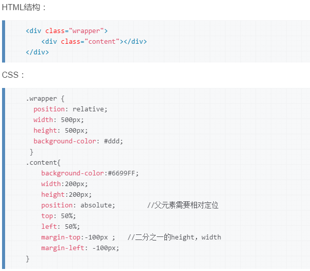
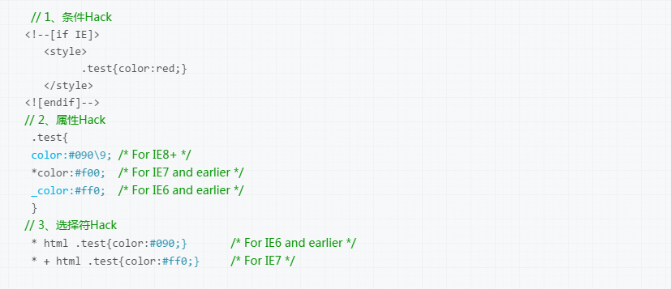
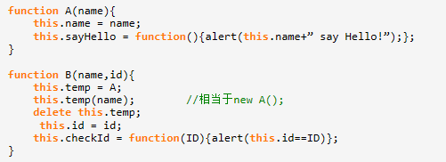
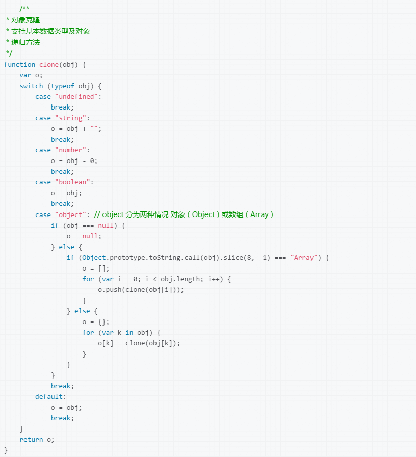
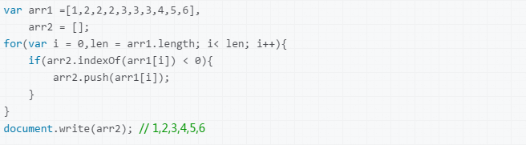
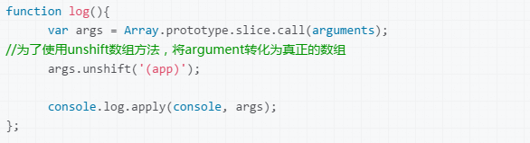
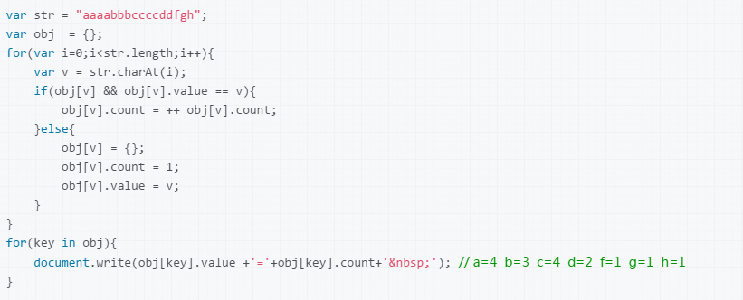
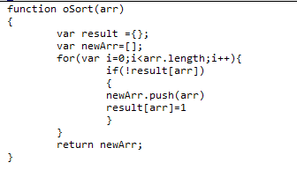

Web前端面试题汇总（含答案）
此面试题包含HTML+CSS和JavaScript两部分。
HTML+CSS部分
- 1.对WEB标准以及W3C的理解与认识
-
标签闭合、标签小写、不乱嵌套、提高搜索机器人搜索几率、使用外 链css和js脚本、结构行为表现的分离、文件下载与页面速度更快、内容能被更多的用户所访问、内容能被更广泛的设备所访问、更少的代码和组件，容易维护、改版方便，不需要变动页面内容、提供打印版本而不需要复制内容、提高网站易用性...
- 2.xhtml和html有什么区别
-
HTML是一种基本的WEB网页设计语言，XHTML是一个基于XML的置标语言,看起来与HTML有些相象，只有一些小的但重要的区别，XHTML就是一个扮演着类似HTML的角色的XML，所以，本质上说，XHTML是一个过渡技术，结合了XML(有几分)的强大功能及HTML(大多数)的简单特性
最主要的不同：
XHTML 元素要求正确嵌套。
XHTML 所有元素必须关闭。
XHTML 区分大小写。
XHTML 属性值要用双引号。
XHTML 用 id 属性代替 name 属性。
XHTML 特殊字符的处理。
XHTML 文档必须拥有根元素。
- 3.Doctype? 严格模式与混杂模式-如何触发这两种模式，区分它们有何意义?
-
严格模式：使用此类型的网页，浏览器解析将相对严格，不允许使用任何表现样式的标识和属性，比如在元素中直接使用background-color背景色属性。
混杂模式：浏览器对XHTML的解析较为宽松。允许使用4.01中的标签，但必须符合XHTML的语法。
- 4.行内元素有哪些?块级元素有哪些?空(void)元素有那些？CSS的盒模型?
-
行内元素：a、b、span、img、input、strong、select、label、em、button、textarea等
块级元素：div、ul、li、dl、dt、dd、p、h1-h6、blockquote等
空元素：即没有内容的HTML元素，例如：br、meta、hr、link、input、img等
CSS的盒模型：在网页中，一个元素占有空间的大小由几个部分构成，其中包括元素的内容（content），元素的内边距（padding），元素的边框（border），元素的外边距（margin）四个部分。这四个部分占有的空间中，有的部分可以显示相应的内容，而有的部分只用来分隔相邻的区域或区域。4个部分一起构成了css中元素的盒模型。
- 5.CSS引入的方式有哪些? link和@import的区别是?
-
内联 内嵌 外链 导入
差别1：link属于XHTML标签，而@import完全是CSS提供的一种方式。 link标签除了可以加载CSS外，还可以做很多其它的事情，比如定义RSS，定义rel连接属性等，@import就只能加载CSS了。
差别2：加载顺序的差别。当一个页面被加载的时候（就是被浏览者浏览的时候），link引用的CSS会同时被加载，而@import引用的CSS会等到页面全部被下载完再被加载。所以有时候浏览@import加载CSS的页面时开始会没有样式（就是闪烁），网速慢的时候还挺明显。
差别3：兼容性的差别。由于@import是CSS2.1提出的所以老的浏览器不支持，@import只有在IE5以上的才能识别，而link标签无此问题。
差别4：使用dom控制样式时的差别。当使用javascript控制dom去改变样式的时候，只能使用link标签，因为@import不是dom可以控制的。
差别5：@import可以在css中再次引入其他样式表，比如可以创建一个主样式表，在主样式表中再引入其他的样式表
区别 ：同时加载，前者无兼容性，后者CSS2.1以下浏览器不支持；Link 支持使用javascript改变样式，后者不可;link写在html页面中，@import写在CSS页面中
- 6.CSS选择符有哪些?哪些属性可以继承?优先级算法如何计算?内联和important哪个优先级高?
-
CSS选择符: 类选择器 、 标签名选择器、 ID选择器 、 后代选择器（派生选择器）、 群组选择器
可以继承： 类选择器 、 标签名选择器、 后代选择器（派生选择器）、群组选择器
优先级算法：
标签内直接定义：1000
ID选择器：100
类选择器 ：10
标签名选择器：1
内联和important中，important优先级高
- 7.前端页面有哪三层构成，分别是什么?作用是什么?
-
结构层；主要指DOM节点；HTML/XHTML
样式层；主要是指页面渲染；CSS
脚本层：主要指页面动画效果；JS/AS
- 8.css的基本语句构成是?
-
选择器{属性1:值1;属性2:值2;……}
- 9.如何居中一个浮动元素?
-
设置浮动元素宽高，使用margin:0 auto;
- 10.CSS实现垂直水平居中
-

- 11.img标签上title与alt属性的区别是什么?
-
Alt 图片不能加载时在页面显示的提示信息。Title 图片的标题，鼠标悬停时显示，鼠标离开就隐藏。
- 12.描述css reset的作用和用途。
-
Reset重置浏览器的css默认属性 ,如*{margin:0;padding:0},将所有元素的padding和margin值都设为0，可以避免一些浏览器在理解这两个属性默认值上的”分歧”
- 13.解释css sprites如何使用。
-
Css精灵,雪碧图， 把一堆小的图片整合到一张大的图片上，减轻服务器对图片的请求数量
- 14.浏览器标准模式和怪异模式之间的区别是什么?
-
标准模式是指浏览器按W3C标准解析执行代码；怪异模式则是使用浏览器自己的方式解析执行代码，因为不同浏览器解析执行的方式不一样，所以我们称之为怪异模式。浏览器解析时到底使用标准模式还是怪异模式，与你网页中的DTD声明直接相关，DTD声明定义了标准文档的类型（标准模式解析）文档类型，会使浏览器使用相应的方式加载网页并显示，忽略DTD声明,将使网页进入怪异模式(quirks mode)。
- 15.你如何对网站的文件和资源进行优化?期待的解决方案包括：
-
文件合并
文件最小化/文件压缩
使用CDN托管
缓存的使用
- 16.什么是语义化的HTML?
-
语义化的HTML就是写出的HTML代码，符合内容的结构化（内容语义化），选择合适的标签（代码语义化），能够便于开发者阅读和写出更优雅的代码的同时让浏览器的爬虫和机器很好地解析。
1.语义化有利于SEO，有利于搜索引擎爬虫更好的理解我们的网页，从而获取更多的有效信息，提升网页的权重。
2.在没有CSS的时候能够清晰的看出网页的结构，增强可读性。
3.便于团队开发和维护，语义化的HTML可以让开发者更容易的看明白，从而提高团队的效率和协调能力。
4.支持多终端设备的浏览器渲染。
- 17.清除浮动的几种方式，各自的优缺点
-
1.使用空标签清除浮动 clear:both（理论上能清楚任何标签，增加无意义的标签）
2.使用overflow:auto（空标签元素清除浮动而不得不增加无意代码的弊端,,使用zoom:1用于兼容IE）
3.是用afert伪元素清除浮动(用于非IE浏览器)
- 18.写出几种IE6 BUG的解决方法
-
1.双边距BUG float引起的 使用display
2.3像素问题 使用float引起的 使用dislpay:inline -3px
3.超链接hover 点击后失效 使用正确的书写顺序 link visited hover active
4.Ie z-index问题 给父级添加position:relative
5.Png 透明 使用js代码 改
6.Min-height 最小高度 ！Important 解决
7.select 在ie6下遮盖 使用iframe嵌套
8.为什么没有办法定义1px左右的宽度容器（IE6默认的行高造成的，使用over:hidden,zoom:0.08 line-height:1px）
- 19.主流浏览器的内核分别是什么?
-
IE: trident内核
Firefox：gecko内核
Safari：webkit内核
Opera：以前是presto内核，Opera现已改用Google Chrome的Blink内核
Chrome：Blink(基于webkit，Google与Opera Software共同开发)
- 20.有没有关注HTML5和CSS3?如有请简单说一些您对它们的了解情况！
-
有，HTML5的是目前正在为未来的HTML标准的主要修订的发展。其前任一样，4.01和XHTML 1.1的HTML，HTML5的是一个结构和提交万维网内容的标准。新标准结合了诸如视频播放，拖动和放下以前曾在第三方浏览器插件依赖例如Adobe Flash，微软的Silverlight的功能，和谷歌齿轮。
- 21.如果让你来制作一个访问量很高的大型网站，你会如何来管理所有CSS文件、JS与图片?
-
把所有的CSS文件都放入一个样式表中,通过把所有的脚本放到一个文件中来减少HTTP请求的方法。js文件也采用同样的方法。把所有的背景图像都放到一个图片文件中，然后通过CSS的background-image和background-position属性来显示图片的不同部分。
- 22.简述一下src与href的区别
-
href 是指向网络资源所在位置，建立和当前元素（锚点）或当前文档（链接）之间的链接，用于超链接。
src是指向外部资源的位置，指向的内容将会嵌入到文档中当前标签所在位置；在请求src资源时会将其指向的资源下载并应用到文档内，例如js脚本，img图片和frame等元素。当浏览器解析到该元素时，会暂停其他资源的下载和处理，直到将该资源加载、编译、执行完毕，图片和框架等元素也如此，类似于将所指向资源嵌入当前标签内。这也是为什么将js脚本放在底部而不是头部。
- 23.什么是CSS Hack?
-
一般来说是针对不同的浏览器写不同的CSS,就是 CSS Hack。
IE浏览器Hack一般又分为三种，条件Hack、属性级Hack、选择符Hack（详细参考CSS文档：css文档）。例如：

- 24.简述同步和异步的区别
-
同步是阻塞模式，异步是非阻塞模式。
同步就是指一个进程在执行某个请求的时候，若该请求需要一段时间才能返回信息，那么这个进程将会一直等待下去，直到收到返回信息才继续执行下去；
异步是指进程不需要一直等下去，而是继续执行下面的操作，不管其他进程的状态。当有消息返回时系统会通知进程进行处理，这样可以提高执行的效率。
- 25.px和em的区别
-
px和em都是长度单位，区别是，px的值是固定的，指定是多少就是多少，计算比较容易。em得值不是固定的，并且em会继承父级元素的字体大小。
浏览器的默认字体高都是16px。所以未经调整的浏览器都符合: 1em=16px。那么12px=0.75em, 10px=0.625em
- 26.什么叫优雅降级和渐进增强？
-
渐进增强 progressive enhancement：
针对低版本浏览器进行构建页面，保证最基本的功能，然后再针对高级浏览器进行效果、交互等改进和追加功能达到更好的用户体验。
优雅降级 graceful degradation：
一开始就构建完整的功能，然后再针对低版本浏览器进行兼容。
区别：
a. 优雅降级是从复杂的现状开始，并试图减少用户体验的供给
b. 渐进增强则是从一个非常基础的，能够起作用的版本开始，并不断扩充，以适应未来环境的需要
c. 降级（功能衰减）意味着往回看；而渐进增强则意味着朝前看，同时保证其根基处于安全地带
- 27.经常遇到的浏览器兼容问题有哪些？
-
1.在有的浏览器中，默认字体大小为12px,所以在设字体大小的时候，最小设为12px，如果在做的过程中，发现字体小于12，可直接作为图片使用/
2.a标签对里不能嵌套a标签对
3.若给a标签内的内容样式加上样式，需要设置display:block;（在IE中如果设置宽高会自动变成块，在FF中则不会），但如果设置了float属性，就不需要设置display:block。
4.ul，ol在FF默认情况下，有list-style-type样式和padding值，dl在IE和FF默认情况下，有padding值，所以应该事先声明ul,li,ol,dl,dd,dd{margin:0;padding:0}。
5.作为外部 wrapper 的 div 不要定死高度, 最好还加上 overflow: hidden.以达到高度自适应
6.关于手形光标. cursor: pointer. 而hand 只适用于 IE.
7.css布局中的居中问题:在父级元素定义TEXT-ALIGN: center;这个的意思就是在父级元素内的内容居中；对于IE这样设定就已经可以了。但在mozilla中不能居中。解决办法就是在子元素定义时候设定时再加上“margin-right: auto;margin-left: auto; ”需要说明的是，如果你想用这个方法使整个页面要居中，建议不要套在一个DIV里，你可以依次拆出多个div，只要在每个拆出的div里定义margin-right: auto;margin-left: auto; 就可以了。
8.浮动ie产生的双倍距离
#box{ float:left; width:100px; margin:0 0 0 100px; //这种情况之下IE会产生200px的距离，这时需要设置display:inline; //使浮动忽略}
JavaScript部分
- 1.js是什么，js和html 的开发如何结合?
-
js是一种基于对象和事件驱动，并具有安全性的脚本语言。
可以html的三个地方编写js脚本语言：一是在网页文件的标签对中直接编写脚本程序代码；二是将脚本程序代码放置在一个单独的文件中，在网页文件中引用这个脚本程序语言；三是将脚本程序代码作为某个元素的事件属性值或超链接的href属性值。
- 2.怎样添加、移除、移动、复制、创建和查找节点
-
（1）创建新节点
createDocumentFragment() //创建一个DOM片段
createElement_x() //创建一个具体的元素
createTextNode() //创建一个文本节点
（2）添加、移除、替换、插入
appendChild()
removeChild()
replaceChild()
insertBefore()
（3）查找
getElementsByTagName() //通过标签名称
getElementsByName() //通过元素的Name属性的值
getElementById() //通过元素Id，唯一性
- 3.怎样使用事件以及IE和DOM事件模型之间存在哪些主要差别
- 答案参考：https://zhidao.baidu.com/question/1114423269413263619.html
- 4.面向对象编程:b怎么继承a
- 
- 5.javascript的typeof返回哪些数据类型
-
Object number function boolean underfind
- 6.例举3种强制类型转换和2种隐式类型转换?
-
强制（parseInt,parseFloat,number）
隐式（== – ===）
- 7.split() join() 的区别
-
前者是切割成数组的形式，后者是将数组转换成字符串
- 8.数组方法pop() push() unshift() shift()
-
Push()尾部添加 pop()尾部删除
Unshift()头部添加 shift()头部删除
- 9.事件绑定和普通事件有什么区别
-
事件绑定就是针对dom元素的事件，绑定在dom元素上；普通事件即为非针对dom元素的事件
- 10.IE和DOM事件流的区别
-
1.执行顺序不一样、
2.参数不一样
3.事件加不加on
4.this指向问题
- 11.IE和标准下有哪些兼容性的写法
-
Var ev = ev || window.event
document.documentElement.clientWidth || document.body.clientWidth
Var target = ev.srcElement||ev.target
- 12.ajax请求的时候get 和post方式的区别
-
1.使用Get请求时,参数在URL中显示,而使用Post方式,则不会显示出来
2.使用Get请求发送数据量小,Post请求发送数据量大
- 13.call和apply的区别
-
Object.call(this,obj1,obj2,obj3)
Object.apply(this,arguments)
- 14.ajax请求时，如何解释json数据
-
使用eval parse 鉴于安全性考虑 使用parse更靠谱
- 15.实现一个函数clone，可以对JavaScript中的5种主要的数据类型（包括Number、String、Object、Array、Boolean）进行值复制。
- 
- 16.如何消除一个数组里面重复的元素？
- 
- 17.在Javascript中什么是伪数组？如何将伪数组转化为标准数组？
- 伪数组（类数组）：无法直接调用数组方法或期望length属性有什么特殊的行为，但仍可以对真正数组遍历方法来遍历它们。典型的是函数的argument参数，还有像调用getElementsByTagName,document.childNodes之类的,它们都返回NodeList对象都属于伪数组。可以使用Array.prototype.slice.call(fakeArray)将数组转化为真正的Array对象。

- 18.Javascript中callee和caller的作用？
-
caller是返回一个对函数的引用，该函数调用了当前函数；
callee是返回正在被执行的function函数，也就是所指定的function对象的正文。
- 19.请描述一下cookies，sessionStorage和localStorage的区别
-
sessionStorage用于本地存储一个会话（session）中的数据，这些数据只有在同一个会话中的页面才能访问并且当会话结束后数据也随之销毁。因此sessionStorage不是一种持久化的本地存储，仅仅是会话级别的存储。而localStorage用于持久化的本地存储，除非主动删除数据，否则数据是永远不会过期的。
web storage和cookie的区别
Web Storage的概念和cookie相似，区别是它是为了更大容量存储设计的。Cookie的大小是受限的，并且每次你请求一个新的页面的时候Cookie都会被发送过去，这样无形中浪费了带宽，另外cookie还需要指定作用域，不可以跨域调用。
除此之外，Web Storage拥有setItem,getItem,removeItem,clear等方法，不像cookie需要前端开发者自己封装setCookie，getCookie。但是Cookie也是不可以或缺的：Cookie的作用是与服务器进行交互，作为HTTP规范的一部分而存在 ，而Web Storage仅仅是为了在本地“存储”数据而生。
- 20.统计字符串中字母个数或统计最多字母数。
- 
- 21.jQuery的事件委托方法on、live、delegate之间有什么区别？
- 答案参考：http://www.w2bc.com/Article/29127
- 22.如何理解闭包
- 闭包，官方对闭包的解释是：一个拥有许多变量和绑定了这些变量的环境的表达式（通常是一个函数），因而这些变量也是该表达式的一部分(闭包就是能够读取其他函数内部变量的函数)。闭包的特点：
1. 作为一个函数变量的一个引用，当函数返回时，其处于激活状态。
2. 一个闭包就是当一个函数返回时，一个没有释放资源的栈区。
简单的说，Javascript允许使用内部函数---即函数定义和函数表达式位于另一个函数的函数体内。而且，这些内部函数可以访问它们所在的外部函数中声明的所有局部变量、参数和声明的其他内部函数。当其中一个这样的内部函数在包含它们的外部函数之外被调用时，就会形成闭包。
答案参考：http://www.2cto.com/kf/201410/342609.html
- 24.跨域请求资源的方法有哪些？
- 答案参考：http://www.cnblogs.com/dojo-lzz/p/4265637.html
- 25.事件委托是什么
- 让利用事件冒泡的原理，让自己的所触发的事件，让他的父元素代替执行！
- 26.如何阻止事件冒泡和默认事件
- canceBubble return false
- 27.添加 删除 替换 插入到某个接点的方法
- obj.appendChidl()
obj.innersetBefore
obj.replaceChild
obj.removeChild
- 28.javascript的本地对象，内置对象和宿主对象
- 本地对象为array obj regexp等可以new实例化
内置对象为gload Math 等不可以实例化的
宿主为浏览器自带的document,window 等
- 29.document load 和document ready的区别
- Document.onload 是在结构和样式加载完才执行js
Document.ready原生种没有这个方法，jquery中有 $().ready(function)
- 30.javascript的同源策略
- 一段脚本只能读取来自于同一来源的窗口和文档的属性，这里的同一来源指的是主机名、协议和端口号的组合
- 31.常使用的库有哪些?常用的前端开发工具?开发过什么应用或组件?
- 常用的前端开发工具：firebug、photoshop、editplus、取色器、色板、eclipse
- 32.编写一个数组去重的方法
- 